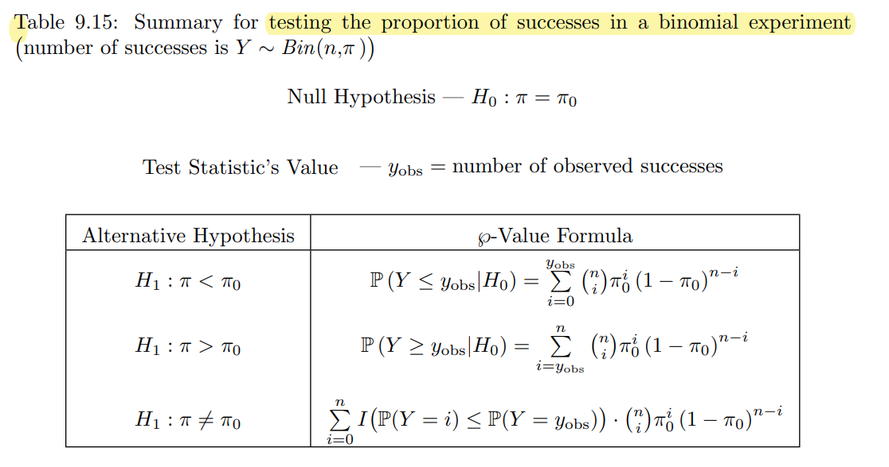
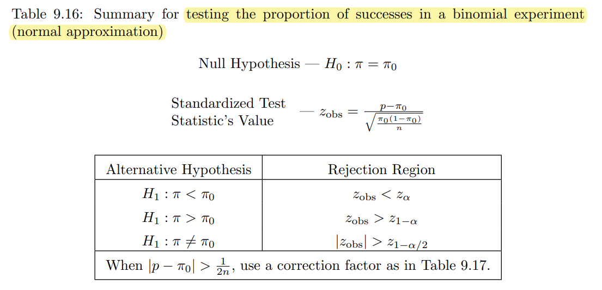

Lab 4 - Hypothesis testing for proportion, goodness-of-fit, and categorical data analysis
1 Welcome to Lab 4
Intended Learning Outcomes:
- Conduct a hypothesis test for the population proportion in
Rwith a step-by-step guide. - Conduct a goodness-of-fit test in
Rwith a step-by-step guide. - Conduct hypothesis test of independence or homogeneity in
Rwith a step-by-step guide.
1.1 A summary of the type of the hypothesis test and R commands used today
Test for population proportions

The exact Binomial test can be implemented in R by using binom.test:
x: number of successesn: number of trialsp: hypothesized probability of success, i.e. \(\pi\) under \(H_0\)alternativeandconf.level: same as explained in thevar.testfunction.

Testing the proportion of successes in a Binomial experiment with normal approximation can be performed by using prop.test:
prop.test(x, n, p = NULL,
alternative = c("two.sided", "less", "greater"),
conf.level = 0.95, correct = TRUE)All arguments are the same as in the binom.test() function.
Goodness-of-fit test
The test criterion for testing \(H_0: F_X(x) = F_0(x)\) for all \(x\) against the alternative \(H_1: F_X(x) \neq F_0(x)\) for some \(x\) when the null hypothesis is completely specified is \[\chi^2_\text{obs} = \sum_{k=1}^K \frac{(O_k-E_k)^2}{E_k},\] where \(K\) is the total number of categories.
For large \(n\), provided all expected categories are at least 5, \(\chi^2_\text{obs}\) is distributed approximately \(\chi^2_{K-1}\).
The test can be performed by using chisq.test:
x: a vector of observed counts in each categoryp: a vector of probabilities for the observations falling into each category
Test of independence and test of homogeneity
The test criterion for test of independence, i.e.
\[H_0: \pi_{ij} = \pi_{i\bullet} \pi_{\bullet j} \text{ vs } H_1: \pi_{ij} \neq \pi_{i\bullet} \pi_{\bullet j} \text{ for at least one } i,j,\]
and the test criterion for test of homogeneity, i.e.
\[H_0: \pi_{1j} = \pi_{2j} = \cdots = \pi_{Ij} \text{ for all $j$ vs } H_1: \pi_{ij} \neq \pi_{i',j} \text{ for some } (i,i',j),\]
is
\[\chi^2_\text{obs} = \sum_{i=1}^I\sum_{j=1}^J \frac{(O_{ij}-E_{ij})^2}{E_{ij}},\]
where \(I\) is the total number of rows and \(J\) is the total number of columns. As the test criterion has the same form as the goodness-of-fit test, the same R command can be used to perform the test: chisq.test(data), where data is the \(I \times J\) contingency table collected from the experiment.